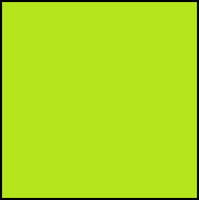
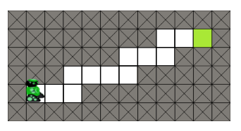
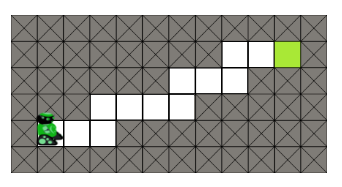
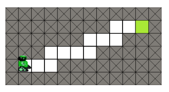
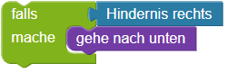

Hindernisse umgehen
 
 

Programmiere den Roboter:
Der Roboter soll das grüne Feld erreichen, ohne gegen die Hindernisse zu laufen.
Um zu testen, ob sich vor dem Roboter ein Hindernis befindet, benutze
den Baustein falls.
die if-Kontrollanweisung.
Um zum Beispiel den Roboter nach unten zu bewegen, falls sich rechts von ihm ein Hindernis befindet, kannst du schreiben:


if hindernisRechts():
unten()
Um zu testen, ob sich von dem Roboter ein Hindernis befindet, benutze
den Baustein falls - sonst.
die if/else-Kontrollanweisung.
Um zum Beispiel den Roboter nach unten zu bewegen, falls sich rechts von ihm ein Hindenis befindet, und ihn andernfalls nach oben zu bewegen, kannst du schreiben:


if hindernisRechts():
unten()
else:
oben()
Das grüne Feld ist 16 Felder rechts vom Roboter.
Das grüne Feld ist 24 Schritte vom Roboter entfernt.